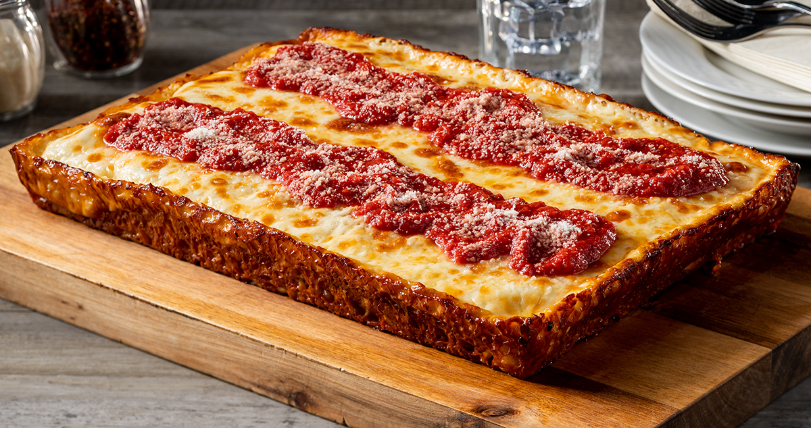

Pimpin pizza like a mofo.

Ingredients:
- 12 ounces (340g) Brick cheese, cut into 1/2-inch cubes
- 12 ounces (340g) high-quality natural-casing pepperoni, such as Boar's Head or Vermont Smoke & Cure, cut into 1/8-inch slices
- One recipe dough
- One recipe sauce
The steps:
- Adjust oven rack to lowest position and preheat oven to 550°F (290°C), or as close to it as your oven gets.
- Pour a couple tablespoons olive oil in the bottom of a Detroit-style anodized aluminum pan or two 8- by 8-inch cake pans. (Split dough in half if using cake pans.) Transfer dough to pan(s) and turn to coat in oil. Press down on dough and spread it toward the edges. You won't be able to get it all the way to the edges; this is okay. Spread it as much as you can without tearing, then cover tightly in plastic and set aside for 30 minutes to allow dough to relax. Return to dough and stretch it out again. It should be able to reach the edges this time. If not, let it rest a little more and try again. To get the dough to stay in the corners, stretch it up beyond the corners so that it pulls back into place. Once dough is stretched, cover again and set aside while you make the sauce.
- To Form the Pizza: Press down on dough with your fingertips to remove any large air bubbles. Lay half of pepperoni (if using) evenly over face of dough. Top with cheese, spreading it evenly all the way to the very edges of the pan, then add remaining pepperoni. Spoon sauce over surface in 3 even rows. (You will need only about half the sauce—save the rest for another pizza.)
- Transfer to oven and bake until edges are black and bubbly and exposed cheese on top is starting to lightly brown, 12 to 15 minutes. Transfer to a trivet or folded kitchen towel on countertop.
- Run a thin metal spatula all the way around the edges of the pan to loosen the pizza. Carefully lift it out and slide it onto a cutting board. Cut pizza and serve.